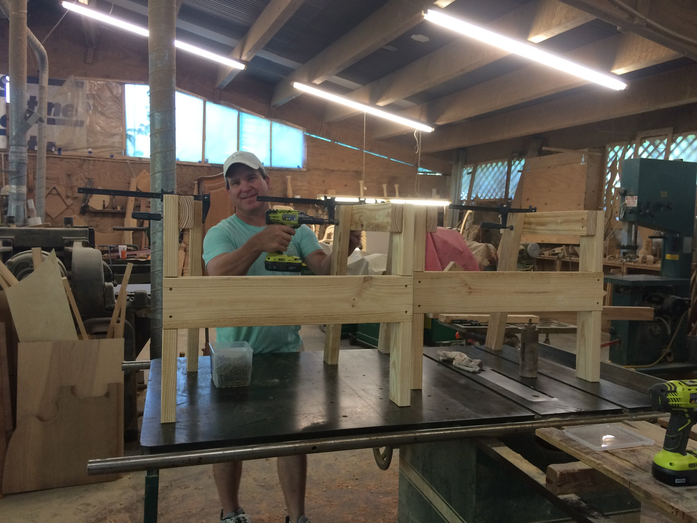
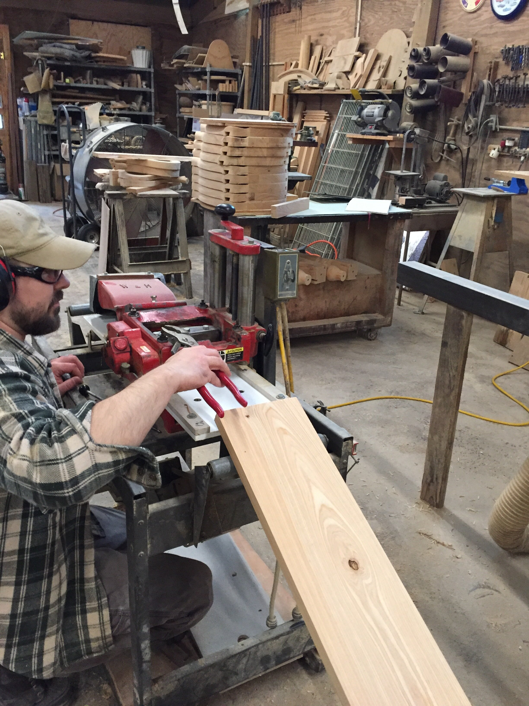
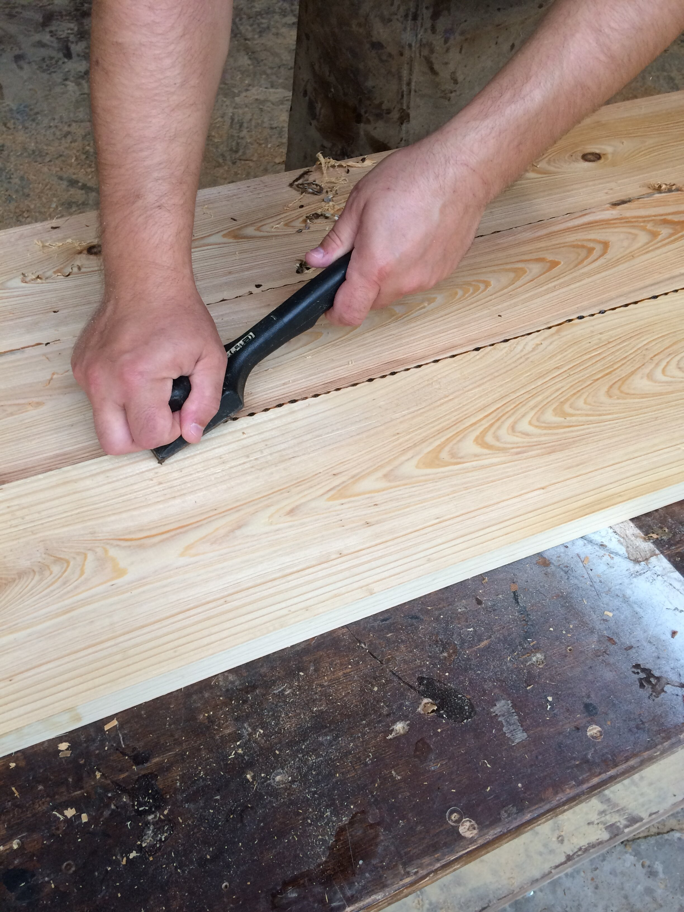
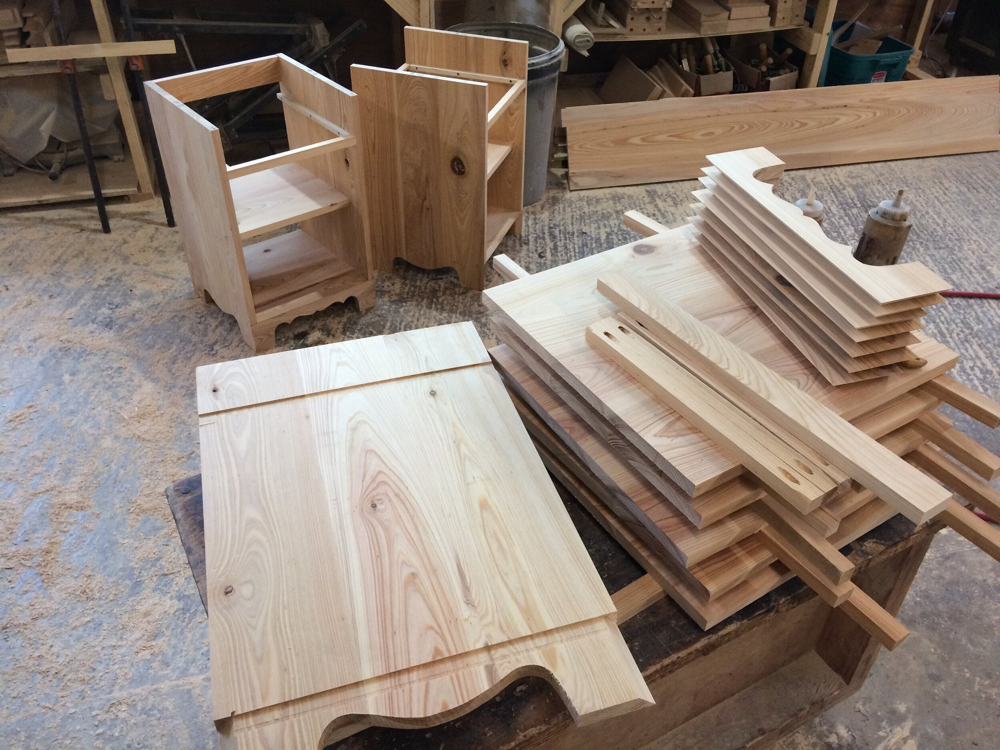
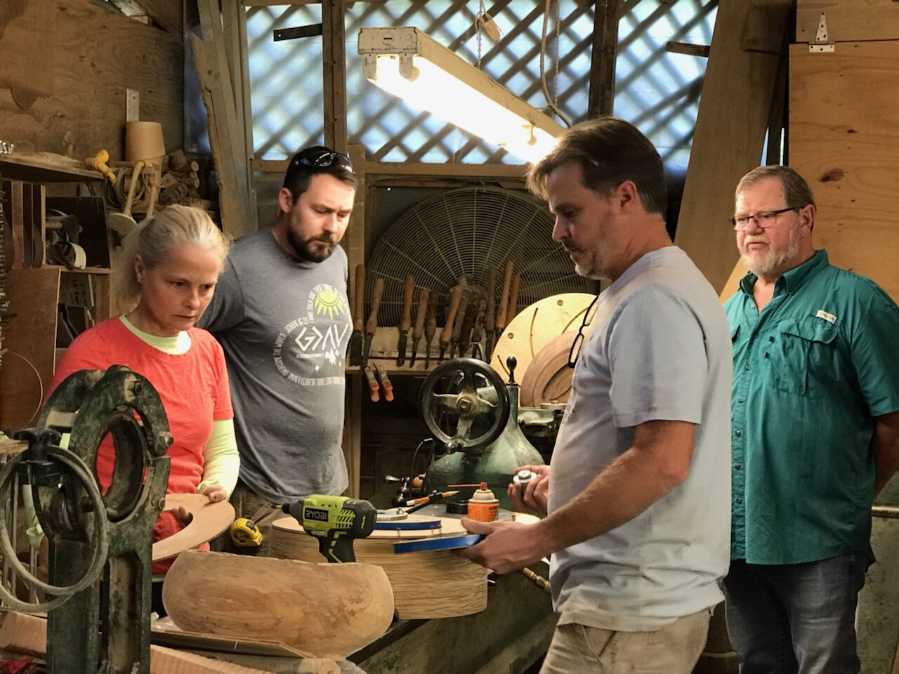
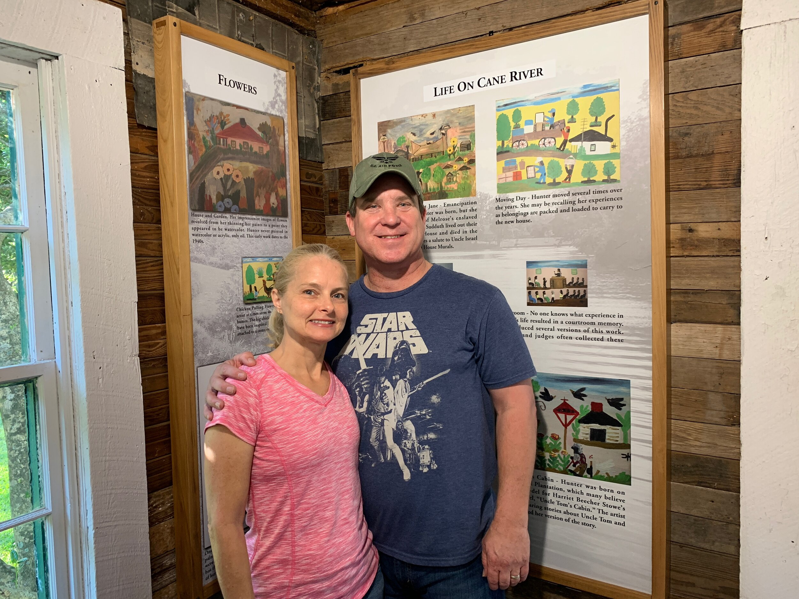
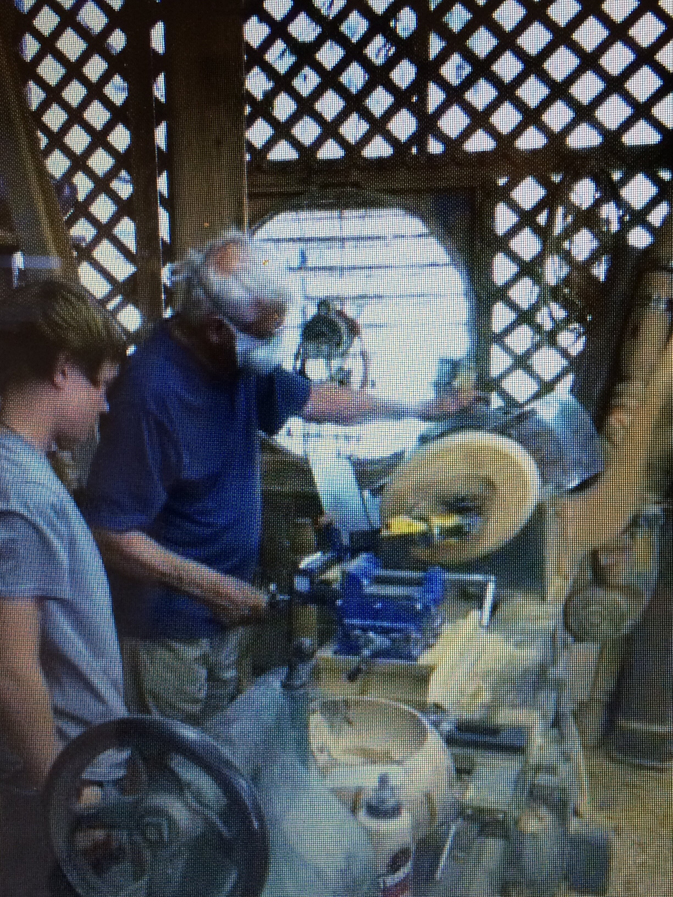

A story told in cypress.
George Olivier opened his shop in 1965. Today his daughter Chalon carries on the old-world tradition — same designs, same patterns, same methods, and the same quiet devotion to doing it right.

Established by George. Kept by his daughter.
Established in 1965 by George M. Olivier III, Olivier WoodWorks in Natchitoches has transcended three generations. Presently, Chalon Ahbol and her son Alix preserve the legacy, crafting cypress furniture with the designs, patterns and methods reminiscent of George, her father.
Chalon literally grew up under the table saw. For several years before her father's passing, she worked beside him closely, soaking in the knowledge of his procedures and practices. Today she keeps his old-world tradition alive, producing the Olivier Louisiana style with the same care he taught her.
The story of Olivier Louisiana style.
As you stroll along Front Street in historic Natchitoches, you will see handmade cypress furniture with a distinct Louisiana style displayed in an open carriageway. It is deeply intertwined in the story of Louisiana and Natchitoches. Several blocks away is where the actual magic happens — wood is sawed, lathes turn, sawdust flies, and beautiful furniture is made.
George M. Olivier III, a master craftsman and artist, opened Olivier's Fine Cypress Furniture in Natchitoches in 1965. George died October 30, 2017, on his 78th birthday. Today his daughter Chalon Ahbol continues the family business with traditions passed down from her father to create furniture exclusively from cypress.
"Dad and I were very close," she said. "Continuing the family business was something I just knew I had to do. My dad grew up in New Orleans. His parents were very French. They would go to homes and he would see antiques. Furniture was something he grew up with. In the beginning he started refinishing furniture, and that's where he learned how it all went together. He brought a sense of tradition and history to his work in cypress."
"I never, ever looked at a clock. I just took my time and did it right." — George Olivier
Their furniture showcases a distinctive French Quarter refinement that is as welcoming as it is well-made. And cypress — to George, no other wood reflects the haunting beauty of the bayous he so loved to wander. Chalon follows her father's way of working. Idleness occupies little time in the shop. When the hands aren't shaping wood, the mind is. Yet it's the work that does all the talking.
George was a descendant of one of the earliest families to settle in Louisiana straight from France in the 1700s — French Creole to his fingertips. His ancestors owned a beautiful mansion at 828 Toulouse Street in New Orleans. Later, in his shop in Natchitoches, he brought this sense of tradition and history to his work in cypress, and created some of the most beautiful and functional furniture ever made in Louisiana during a career that spanned over a half-century.
George came to Natchitoches to attend Northwestern State College in 1960. While attending college, he worked three years remodeling the Newman Club student center, now Holy Cross Church. In 1966, Father John Cunningham commissioned George to build a hand-carved altar for the Church of the Immaculate Conception so that, for the first time, he could face the congregation. It was the first piece of furniture George ever built — and the moment he started thinking woodworking was his calling.
"My pieces are mighty comfortable to be with. They're not so fine that you think you're livin' in a museum. Furniture has to be functional, laid back, like a good ol' rug. It has craftsmanship, historic lines, and the material makes it real."
The detail and quality of George's work attracted the attention of a group of older men from the community. One of them, Dr. Will Pierson, offered to back the young builder and helped him set up his very own shop. Through refinishing work, George gained an intricate knowledge of the furniture construction techniques of the 1800s. He devoted many hours to research, experimentation with woods, and studying antique tool design — then began adding his own touches and refinements to contemporary designs.
He developed many of his own creations, like the Louisiana Bayou Bed, which incorporates the idea of a Louisiana oak providing shelter and cover for all who lie beneath its massive branches. This is the type of furniture George makes — Louisiana furniture.
George often searched for challenges. By his own admission, he was the only person in the world who made a deep oval wooden bowl — not a round bowl, but an oval bowl with a brim that curls toward the inside. This required him to modify his lathe with two additional motors, and to customize machinery to hold a carving tool while the lathe turns a solid hunk of wood in a willy-nilly elliptical pattern. Making the leap from craftsman to artist, George started designing his own machines and tools to produce the details he was looking for. He made, in his words, "the best homemade sander you've ever seen," and loved showing his tools to any and all interested.
The medium he chose, cypress, reflected his attitude of non-conformity. He saw beauty and durability in cypress at a time when most people overlooked it. "All kiln-dried, select-grade lumber looks like plastic to me," he explained. "I like No. 2 grade with the knots, splits, pecks, worm holes — all the little surprises. I polish them until they look like gemstones."
Through the decades, George influenced the look of downtown Natchitoches, building many of the storefronts on Front Street while keeping with true period architecture. His work is a pinnacle of artistry, craft and skill — with his Louisiana style cypress furniture being passed down through families as treasured heirlooms.
From 1965 to today
George comes to Natchitoches to attend Northwestern State College.
Commissioned to build the hand-carved altar for the Church of the Immaculate Conception — his first piece of furniture, and the beginning of his calling.
George opens Olivier's Fine Cypress Furniture and develops the Louisiana style in cypress over a career spanning half a century.
George passes away on his 78th birthday, October 30. His daughter Chalon continues the family business, keeping his methods and his machines humming.
Chalon and her son Alix craft cypress furniture with the same designs, patterns and methods George used — and the proof is in the sawdust.






"In my Natchitoches shop, I once saw a little boy around 8 run over and hug the posts of the Prudent Mallard style Cloverleaf Empire bed I made. His eyes lit up. He loved it! That's the way I felt as a child when my mother took me to a relative's mansion in New Orleans and I first saw an original Mallard bed. It was love at first sight for me."— George M. Olivier III, on the bed that started it all
Come meet the furniture.
Every piece in our shop is made to order from Louisiana cypress. Tell us your story, and we'll make a piece that carries it.